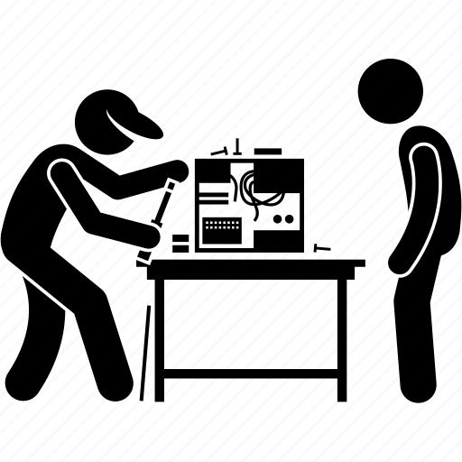

PC Repair Services
At Mike's PC Repair, we offer a comprehensive range of PC repair services to address all your computer-related issues. Whether your computer is running slow, experiencing hardware failures, or infected with malware, our team of experienced technicians is here to help.
Our Services Include:
- Virus and Malware Removal: Safely eliminate viruses, spyware, and other malicious software from your computer.
- Hardware Diagnosis and Repair: Identify and fix hardware issues such as faulty hard drives, defective RAM, or malfunctioning graphics cards.
- Operating System Troubleshooting: Resolve common issues with Windows, macOS, and Linux operating systems to ensure smooth performance.
- Software Installation and Configuration: Install, update, and configure software applications to optimize functionality and performance.
- Data Recovery: Recover lost or deleted files, photos, and documents from damaged or corrupted storage devices.
- System Tune-Up and Optimization: Fine-tune your computer's settings, remove unnecessary files, and optimize performance for maximum speed and efficiency.
Whether you're a home user, small business, or large enterprise, we tailor our repair services to meet your specific needs. Trust Mike's PC Repair for reliable, affordable, and efficient solutions to keep your computer running smoothly.
